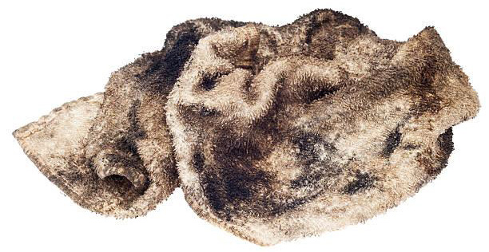
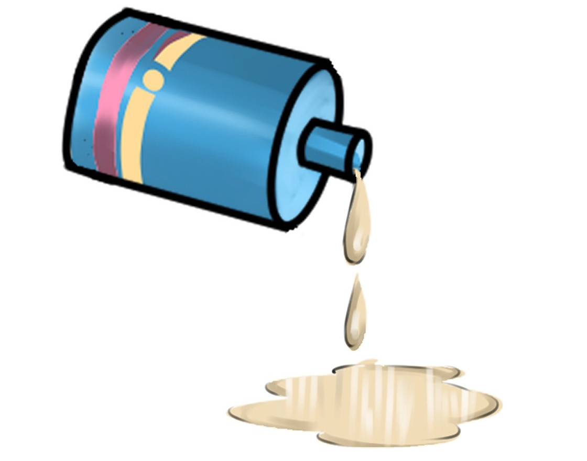

Solvent wastes
Solvents, such as paint thinner, turpentine, toluene, xylene, and alcohol are considered hazardous waste. These wastes should not be dumped in a drain as they will affect the environment. One should observe the safe ways of handling hazards. Figure 6.2 shows an example of a solvent waste.

Paints waste
The oil-based paints are very hazardous and the user should be very careful with them. Do not dump oil-based paints down the drain or in regular trash. Oil-based paints may be combined with solvents and linseed oil for disposal. Latex paints should be dried out and placed in regular trash. Water-based paints may be disposed of via regular trash. Figure 6. 3 shows paint waste.